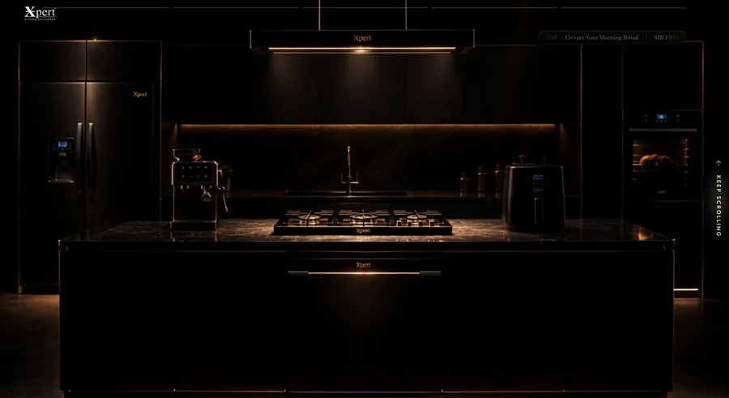
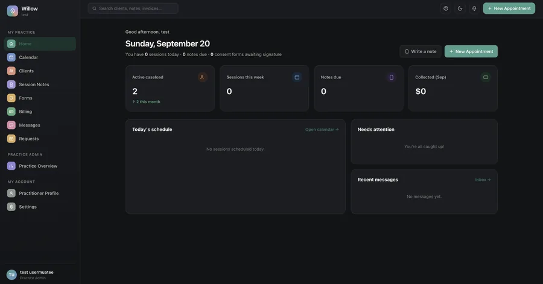
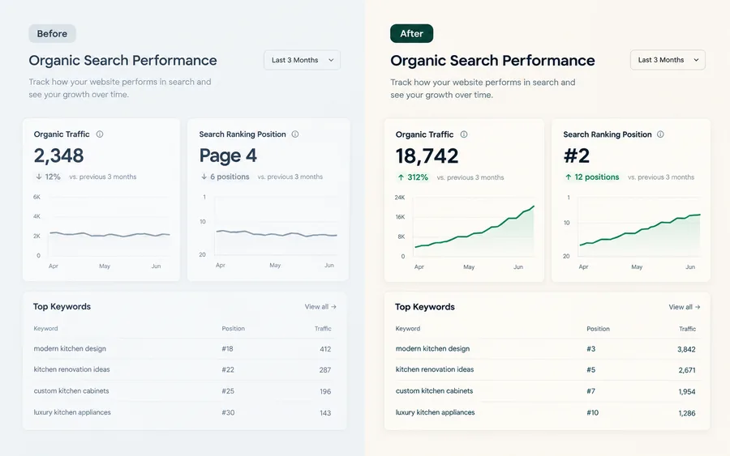
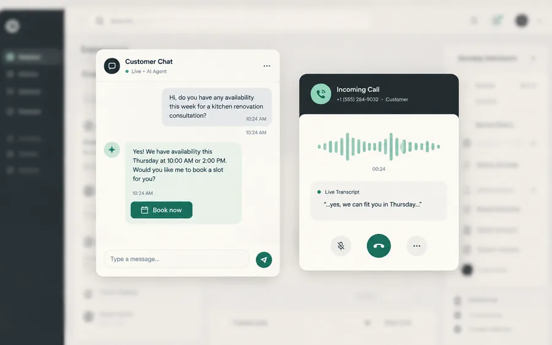

Luxury Appliance Showcase
A cinematic, scroll-driven brand site for a high-ticket kitchen appliance retailer — real footage, no stock photography, built to earn trust before a visitor ever sees a price.
Premium brand, zero templates
Toronto · AI-first · Built to last.
No newsletter. No sequence. One reply from a person.




A sample of what we’ve built — sites, systems and software.
Attributed by industry. We don’t publish client names or logos without written permission, and we haven’t asked for it.
“Sulo Systems built exactly what we needed — no bloat, no unnecessary features. Fast turnaround and it just works.”
“The AI chatbot they built handles questions we used to answer manually all day. It paid for itself in the first month.”
“We were spending on Google Ads every month just to keep the phone ringing. Sulo rebuilt the site and got us ranking for what we actually do. We’ve since turned the ads off and the calls haven’t stopped.”
Every line of this is written in Toronto by people you can get on a call. No offshore contractors, no overnight handoffs, no account manager relaying your changes to someone you will never meet.
Designed, built and maintained by our own team in Toronto. The person who takes your call is the person who changes the page.
The people who design the site also wire up the tracking and read the numbers. Nothing gets lost between an agency, a developer and whoever runs your ads.
Scope and price agreed before we start. If it changes you see the cost first, and you get to say no.
Contact
Tell us what you sell and who you sell it to. We’ll tell you whether we’re the right people for it, and roughly what it costs, on the first call.
One business day reply. Toronto, Canada.